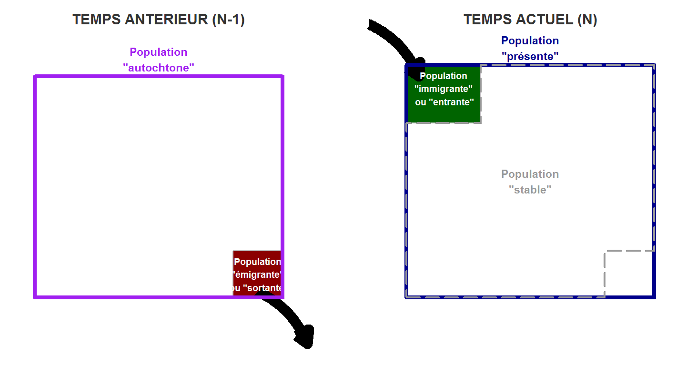

vignettes/methodo_migr.Rmd
methodo_migr.RmdCette recherche part de l’idée que, dans les phénoménes migratoires (internes, mais aussi externes), l’accent est le plus souvent mis sur l’ampleur quantitatives de ces phénoménes (le solde migratoire, le taux de rotation de la population…), sans que soit prise en compte la question, sans doute au moins aussi pertinente sociologiquement et politiquement, de savoir qui sont ceux qui arrivent et ceux qui partent par rapport à ceux qui étaient initialement sur place. En d’autres termes, dans quelle mesure les mobilités transforment-elles la structure sociale locale - et, partant, dans quelle mesure ces mobilités sont-elles perçues comme remettant en cause cet ordre social local ?
Aprés avoir quantifié les flux liés aux mobilités résidentielles en valeur absolue (partie 1) puis relative (partie 2), il est proposé de créer des indices de renouvellement de la population (partie 3) relatifs à des groupes de population puis à la composition de la population dans sa globalité, chacun de ces indices ventilés en trois composantes (l’immigration, l’émigration, l’ensemble des migrations).
Sommaire :
1 - Volumes des flux liés aux migrations résidentielles
2 - Taux relatifs aux migrations
3 - Indices de renouvellement de la population
Pour conserver des flux symétriques, on exclue de l’analyse :
On ne considére donc que les migrations internes au sein du pays (France métropolitaine + DOM - Mayotte).
Les concepts de population basées sur les données de détail fournies dans le fichier détail ‘Migrations Résidentielles’ du RP 2015 (Insee) sont définies comme suit :
Population entrante (“ENTR”) : population présente sur le territoire lors de l’année du recensement mais non présente en N-1.
Population émigrante (“SORT”) : : population non présente sur le territoire lors de l’année du recensement mais présente en N-1.
Population stable (“ISO”) : : population présente sur le territoire lors de l’année du recensement et présente en N-1.
Population autochtone (“AUTO”) : : population présente sur le territoire en N-1 (population stable + population sortante), la population ayant émigré é l’étranger entre N-1 et N n’étant pas connue.
Population présente (“PRES”) : : population présente sur le territoire en N (population stable + population entrante)
Solde migratoire (“SM”) : différence entre population entre la population immigrante et la population émigrante (population entrante - population sortante)
Population mobile en infra (“MINF”) : population stable au sein du territoire mais ayant changé de commune.

Chacune de ces populations peut être ventilée selon :
Le territoire est défini selon le niveau géographique de l’analyse. Celle-ci peut se jouer sur l’ensemble des mailles supra-communales : commune, bassin de vie, zone d’emploi, type d’espace du Zonage en Aires Urbaines…
D’aprés l’Insee, au sein du territoire national deux types de mouvements migratoires sont susceptibles d’affecter l’évolution de la population d’une zone géographique donnée :
Ce sont ces mouvements internes que nous étudions ici.
La part d’entrants dans un territoire correspond à la part de la population entrante (i.e. résidente en France en N-1 mais hors du territoire considéré) au sein de la population présente. Elle est égale au ratio entre la population entrante et la population résidente et est exprimé en %.
La part d’entrants est notée PE et se calcule comme suit pour chaque territoire :
\[ PE = \frac{(ENTR)}{(PRES)} \]
La part de sortants dans un territoire correspond à la part de la population sortante (i.e. résidente dans le territoire en N-1 mais hors du territoire considéré en N) au sein de la population autochtone (résidente sur le territoire considéré en N-1). Il est égal au ratio entre la population sortante et la population autochtone et est exprimé en %.
La part de sortants est notée PS et se calcule comme suit pour chaque territoire :
\[ PS = \frac{(SORT)}{(AUTO)} \]
Le taux de rotation d’un territoire correspond à la part des flux migratoires (population entrante + population sortante) au sein de la population du territoire (moyenne de la population résidente et de la population autochtone). Il est égal au ratio entre le volume total de migrations et la population et est exprimé en ‰.
Le taux de rotation est noté TR et se calcule comme suit pour chaque territoire :
\[ TR = \frac{(ENTR + SORT)}{(AUTO + PRES)/2} \]
Le taux de migration nette interne d’une zone géographique donnée correspond au taux d’évolution de la population imputable aux mouvements migratoires entre cette zone et les autres parties du territoire national. Il est égal à la différence entre les entrées et les sorties de la zone considérée liée à des mouvements internes (i.e. solde migratoire), rapportée à la population moyenne de la zone, et est exprimé en ‰.
Le taux de migration interne nette est noté TM et se calcule comme suit pour chaque territoire :
\[ TM = \frac{(IMMIG - EMIG)}{(AUTO + PRES)/2} \]
Le taux de mobilité infra d’une zone géographique donnée correspond à la part des individus ayant changé de commune au sein de la population stable de cette zone (i.e. présente dans la zone en N-1 et en N), et est exprimé en %.
Le taux de mobilité infra est noté TMINF et se calcule comme suit pour chaque territoire :
\[ TMINF = \frac{(MINF)}{(ISO)/2} \]
\[ ICI = p_{ec} - p_{ac} \]
avec \(p_{ec}\) la part d’une catégorie spécifique dans la population “entrante”, et \(p_{ac}\) la part de cette même catégorie dans la population “autochtone”.
Plus cet indice est proche de \(-1\), plus l’immigration diminue la part de cette catégorie dans la population. Plus il est proche de \(1\), plus elle accroît la part de cette catégorie dans la population du territoire considéré. Plus il est proche de \(0\), et plus l’immigration est neutre dans la composition du territoire dans la population de cette catégorie.
\[ ICE = p_{ac} - p_{sc} \]
avec \(p_{ac}\) la part d’une catégorie spécifique dans la population “autochtone”, et \(p_{sc}\) la part de cette même catégorie dans la population “sortante”.
Plus cet indice est proche de \(-1\), plus l’émigration diminue la part de cette catégorie dans la population. Plus il est proche de \(1\), plus elle accroît la part de cette catégorie dans la population du territoire considéré. Plus il est proche de \(0\), et plus l’émigration est neutre dans la composition du territoire dans la population de cette catégorie.
\[ ICM = \frac{sm_c}{n_c} - \frac{sm_nc}{n_nc} \]
avec \(sm_{c }\) le solde migratoire des individus de la catégorie considérée, \(sm_{nc}\) le solde migratoire des individus des autres catégories, \(n_c\) le nombre des individus de cette catégorie dans la population présente et \(n_nc\) le nombre des individus des autres catégories dans la population présente.
Plus cet indice est proche de \(-1\), plus les migrations diminuent la part de cette catégorie dans la population. Plus il est proche de \(1\), plus elles accroissent la part de cette catégorie dans la population du territoire considéré. Plus il est proche de \(0\), et plus les migrations sont neutres dans la composition du territoire dans la population de cette catégorie.
\[ IRI = \sqrt{\sum_i(p_{ai} - p_{mi})^2} \]
avec \(p_{ai}\) la part de la catégorie \(i\) dans la population “autochtone” et \(p_{mi}\) la part de la catégorie \(i\) dans la population “entrante”.
Plus cet indice est proche de \(0\), et plus la structure de la population entrante est comparable à celle des autochtones. Plus cet indice est proche de \(1\), et plus la structure de la population est modifiée par les migrations entrantes.
\[ IRE = \sqrt{\sum_i(p_{ai} - p_{ei})^2} \]
avec \(p_{ai}\) la part de la catégorie \(i\) dans la population “autochtone” et \(p_{ei}\) la part de la catégorie \(i\)) dans la population “sortante”.
Plus cet indice est proche de \(0\), et plus la structure de la population sortante est comparable à celle des autochtones. Plus cet indice est proche de \(1\), et plus la structure de la population est modifiée par les migrations sortantes.
\[ IRM = \sqrt{\sum_i(\frac{s_i}{n_i})^2} \]
avec \(s_{i}\) le solde migratoire (en valeur absolue) dans la catégorie \(i\) et \(n_i\) le nombre d’individus appartenant à la catégorie \(i\) dans la population présente.
Plus cet indice est proche de \(0\), et plus les migrations sont neutres, i.e. ne modifient pas la structure de la population du territoire considéré. Plus cet indice est proche de \(1\), et plus la structure de la population est modifiée par les migrations, entrantes comme sortantes.
Données et précautions :
Ces indices sont calculés à partir des fichiers détail du recensement, c’est-à-dire à partir de données individuelles. Compte tenu des modalités du nouveau recensement, on ne peut estimer la valeur d’un indice que sur des territoires comprenant un nombre relativement important d’individus (l’INSEE suggére 2000 individus), faute de quoi les marges d’erreur sont trop élevées, et le risque que certains indices ne puissent pas étre calculés à cause de dénominateurs nuls élevé. On ne saurait donc calculer ces indices pour l’ensemble des communes, mais plutôt pour des regroupements (aires urbaines, cantons par exemple) ou des communes de taille relativement importantes.